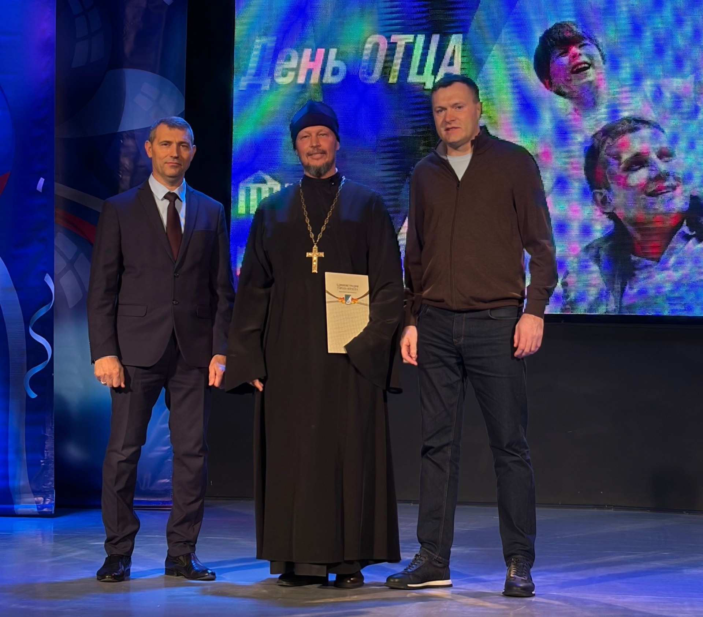
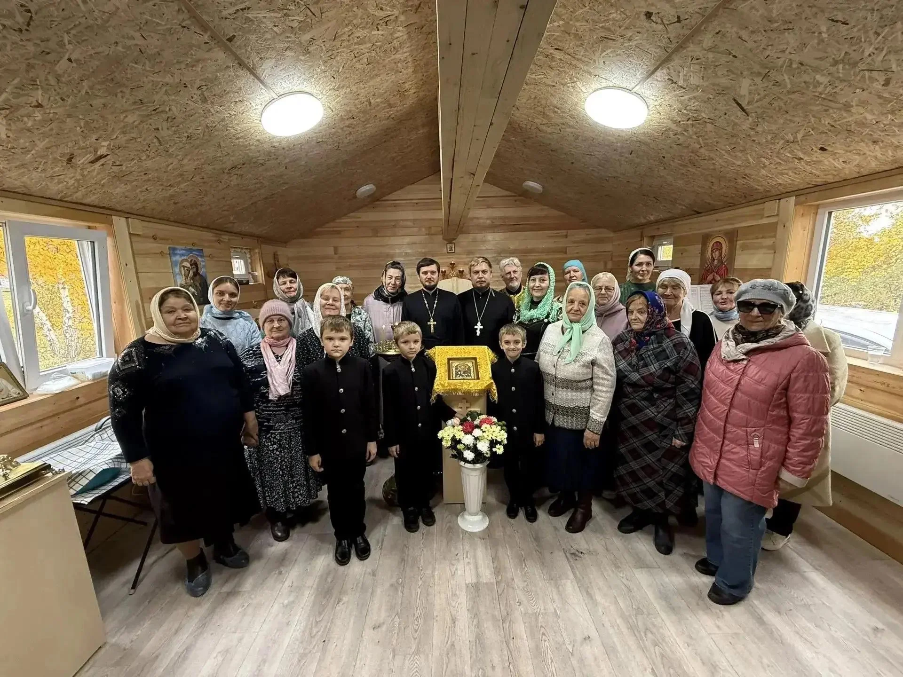

Божественная литургия
Служит иерей Филипп Медведев
Богослужебная жизнь
Сегодня, 19 октября 2026 г., в опубликованном расписании предстоящих служб нет. Ближайшие — 20 октября 2026 г..
Служит иерей Филипп Медведев
События и люди

На праздничном концерте в Городском доме культуры благодарственные письма получили протоиерей Павел Плотников, иереи Сергий Бабин, Сергий Филиппов и Димитрий Ластовский.

8 октября 2026 года временный храм преподобного Сергия Радонежского в Бердске впервые отметил престольный праздник. После литургии совершили славление святому, а затем прихожане и гости собрались за праздничной трапезой. Настоятель иерей Сергий Рудомётов рассказал о начале жизни новой общины.
Наши приходы
Вера становится делом
Здесь вам рады
Если вы давно не были в храме или приходите впервые, начните с простого: зайдите, осмотритесь и задайте свой вопрос сотруднику прихода.
Первый раз в храмеОткройте каталог приходов, выберите населённый пункт и перейдите на страницу храма. Перед поездкой уточните время службы в приходе.
Обратитесь к сотруднику храма и попросите помочь договориться о беседе. Способ обращения зависит от прихода.
Подготовку и порядок участия обсудите со священником вашего прихода. Материалы этого раздела перед публикацией проходят пастырскую проверку.
Бердск и Новосибирский район
Загрузка карты…
Пунктирная метка — приблизительный ориентир, подробности указаны в карточке. Масштаб: кнопки + и − или два пальца.
Выберите населённый пункт или метку, чтобы открыть фотографию и страницу храма.